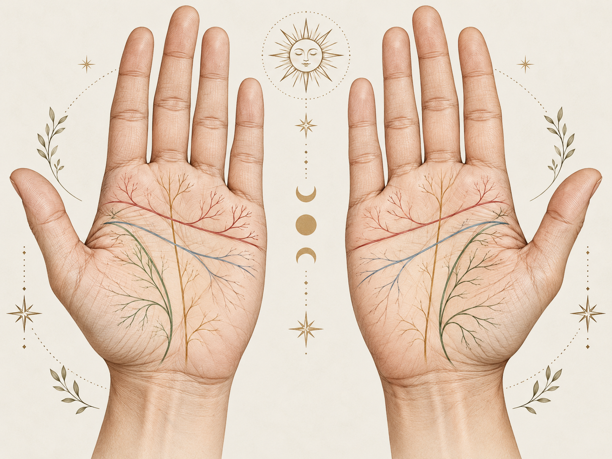

Chiromancie : lecture traditionnelle des lignes de la main
La chiromancie est une tradition divinatoire qui interprète la forme des mains, les doigts, les reliefs de la paume et surtout les lignes palmaires. Les significations ci-dessous décrivent les conventions classiques de cette pratique.
Vue d'ensemble des principales lignes
Au centre, la paume met en évidence les grandes lignes traditionnellement commentées en chiromancie. Autour, tu retrouves un résumé rapide de leur sens avec un lien direct vers les explications détaillées.
Ligne du cœur / amour
Située dans la partie supérieure de la paume, elle est associée aux émotions, à la manière d’aimer et à l’expression affective.
Ligne de vie
Elle entoure la base du pouce et renvoie traditionnellement à la vitalité, au rythme de vie et aux grands tournants.

Clique sur un encadré pour aller directement à la section détaillée correspondante.
Quelle main lire ?
Les écoles de chiromancie ne suivent pas toutes la même règle. Une convention fréquente consiste à comparer les deux mains plutôt qu'à n'en lire qu'une.
Vie actuelle et évolution
Traditionnellement associée aux choix, au comportement présent, aux habitudes acquises et à la manière dont la personne aurait développé son potentiel.
Dispositions de départ
Souvent associée au tempérament de base, aux tendances supposées innées et au potentiel initial.
Les grandes lignes de la paume
| Ligne | Emplacement général | Interprétation traditionnelle |
|---|---|---|
| Ligne de vie | Contourne la base du pouce | Vitalité, énergie, changements importants |
| Ligne du cœur | Partie supérieure de la paume | Relations affectives, manière d'aimer, expression émotionnelle |
| Ligne de tête | Traverse le centre de la paume | Façon de penser, logique, imagination, concentration |
| Ligne du destin | Monte verticalement vers le majeur lorsqu'elle est présente | Parcours, carrière, contraintes ou direction générale |
Ligne de vie
Elle commence généralement entre le pouce et l'index puis descend en arc autour du mont de Vénus, à la base du pouce.
Interprétations classiques
- Longue et bien marquée : vitalité, endurance, stabilité.
- Large arc autour du pouce : énergie tournée vers l'extérieur, goût de l'activité.
- Arc proche du pouce : tempérament supposé plus prudent ou réservé.
- Ligne fine : sensibilité ou énergie considérée comme plus fluctuante.
- Rupture : changement important de rythme de vie ou de situation.
- Ligne parallèle : parfois appelée « ligne sœur », interprétée comme un soutien ou une réserve de vitalité.
Ligne du cœur — ligne de l'amour
La ligne du cœur traverse généralement la partie supérieure de la paume sous les doigts. Elle est traditionnellement associée à la vie affective et à la manière d'exprimer les émotions.
Point d'arrivée
- Sous l'index : idéalisme sentimental, exigences élevées dans les relations.
- Entre index et majeur : recherche d'un équilibre entre idéalisme et réalisme.
- Sous le majeur : approche plus pragmatique ou individualiste des relations.
Forme
- Ligne courbe : expression émotionnelle plus spontanée.
- Ligne droite : émotions davantage contrôlées ou intellectualisées.
- Nombreuses petites branches : vie émotionnelle supposée complexe ou riche.
- Chaînes ou interruptions : périodes d'incertitude ou de changement affectif dans la lecture traditionnelle.
Ligne de tête
Située au milieu de la paume, elle commence généralement près de la ligne de vie et traverse horizontalement ou en diagonale la main.
- Droite et longue : pensée structurée, analytique et pratique.
- Inclinée vers le bas : imagination, intuition et créativité.
- Courte : préférence supposée pour l'action et les décisions rapides.
- Très marquée : concentration et constance intellectuelle.
- Fourche à l'extrémité : capacité à envisager plusieurs points de vue.
Relation avec la ligne de vie
- Départ commun : prudence ou besoin de sécurité.
- Départ séparé : indépendance, autonomie ou goût du risque.
Ligne du destin
Contrairement aux trois lignes principales, elle n'est pas visible chez tout le monde. Lorsqu'elle existe, elle monte généralement depuis le bas de la paume en direction du majeur.
- Droite et profonde : direction de vie considérée comme stable.
- Faible ou discontinue : parcours plus changeant ou moins prédéterminé.
- Commence près de la ligne de vie : influence importante de la famille ou du milieu d'origine.
- Commence au centre de la paume : orientation professionnelle ou personnelle apparaissant plus tard.
- Plusieurs lignes : plusieurs activités, rôles ou trajectoires.
Lignes secondaires
Ligne du Soleil / Apollon
Ligne verticale sous l'annulaire. Associée traditionnellement à la créativité, à la reconnaissance et à la satisfaction personnelle.
Ligne de Mercure
Monte vers l'auriculaire. Liée dans certaines traditions à la communication, aux affaires ou à la santé.
Lignes d'union
Petites lignes horizontales sur le bord de la main sous l'auriculaire. Elles sont parfois appelées lignes de mariage ou de relation.
Ceinture de Vénus
Arc situé au-dessus de la ligne du cœur chez certaines personnes. Associé à une sensibilité émotionnelle ou esthétique accentuée.
Les monts de la main
En chiromancie, les zones charnues de la paume portent traditionnellement les noms de planètes ou de divinités. Leur développement relatif est interprété symboliquement.
| Mont | Emplacement | Symbolique traditionnelle |
|---|---|---|
| Jupiter | Sous l'index | Ambition, autorité, confiance |
| Saturne | Sous le majeur | Responsabilité, sérieux, introspection |
| Apollon / Soleil | Sous l'annulaire | Créativité, esthétique, reconnaissance |
| Mercure | Sous l'auriculaire | Communication, commerce, vivacité |
| Vénus | Base du pouce | Affection, sensualité, énergie |
| Lune | Bord externe inférieur de la paume | Imagination, intuition, voyages |
| Mars | Plusieurs zones centrales ou latérales | Courage, résistance, combativité |
Forme générale de la main
Certaines écoles classent les mains selon quatre types symboliques associés aux éléments.
Paume carrée, doigts plutôt courts
Pragmatisme, stabilité, goût du concret.
Paume carrée, doigts longs
Curiosité intellectuelle, communication, analyse.
Paume longue, doigts plutôt courts
Énergie, spontanéité, initiative.
Paume longue, doigts longs
Sensibilité, intuition, imagination.
Doigts et pouce
Longueur des doigts
- Doigts longs : attention au détail, patience, analyse.
- Doigts courts : vision globale, rapidité et spontanéité.
Pouce
Le pouce occupe une place importante dans plusieurs traditions de chiromancie. Sa longueur, son ouverture par rapport à la paume et la souplesse de ses articulations sont associées symboliquement à la volonté, à l'indépendance et à l'adaptabilité.
Annulaire et index
Certaines lectures traditionnelles comparent la longueur relative de l'index et de l'annulaire, mais ces interprétations chiromantiques ne doivent pas être confondues avec les recherches scientifiques sur les proportions des doigts.
Comment réaliser une lecture traditionnelle
- Observer les deux mains. Comparer la main dominante et la main non dominante.
- Regarder la forme générale. Paume large ou étroite, doigts longs ou courts, souplesse générale.
- Identifier les trois grandes lignes. Vie, cœur et tête.
- Observer leur profondeur et leur continuité. Ne pas se limiter à leur longueur.
- Repérer la ligne du destin et les lignes secondaires. Elles ne sont pas présentes de manière nette chez tout le monde.
- Examiner les monts. Comparer leur relief plutôt que d'analyser chaque zone isolément.
- Faire une lecture d'ensemble. La chiromancie traditionnelle privilégie généralement les combinaisons de signes plutôt qu'un signe unique.
Limites et statut de la chiromancie
Les lignes palmaires sont de véritables plis anatomiques de flexion de la peau. Leur présence et leur forme peuvent être décrites objectivement, mais les significations psychologiques ou prédictives données par la chiromancie appartiennent à un système symbolique.
Cette page présente donc la chiromancie comme un élément d'histoire des croyances et de culture générale, et non comme une méthode scientifique de diagnostic ou de prédiction.